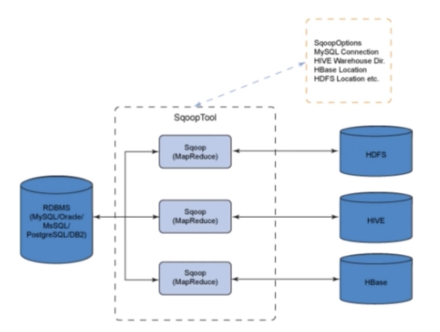
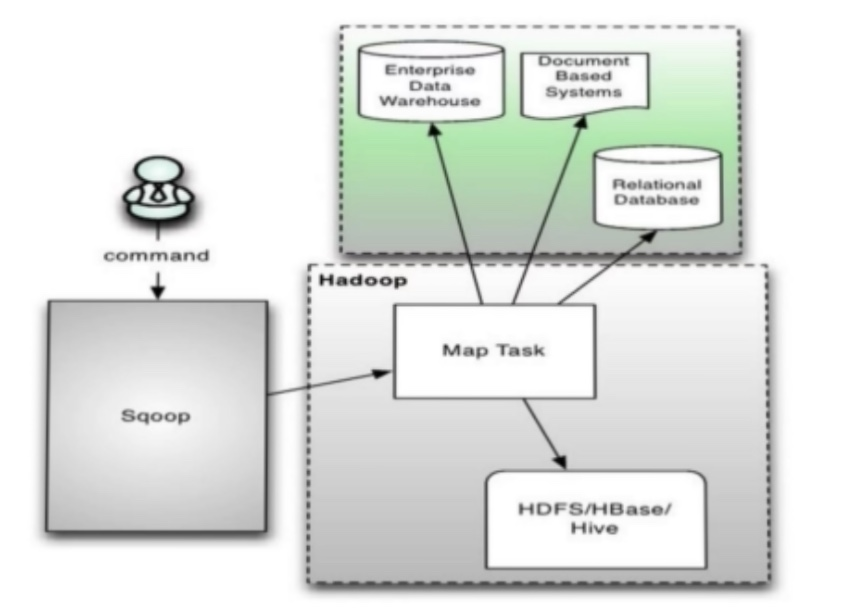
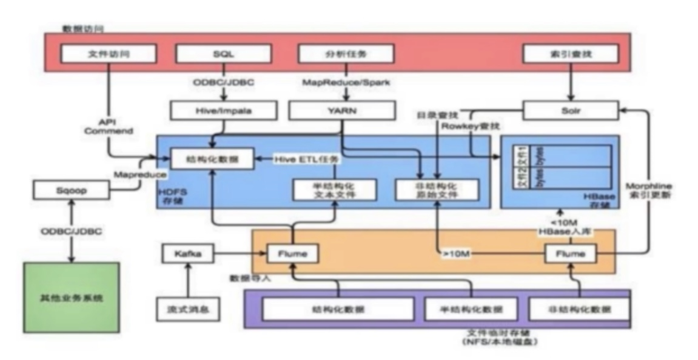

sqoop概览
sqoop是一个用于在Hadoop和传统关系型数据库，例如MySQL、PostgreSQL、Oracle等进行数据传递的工具。可将关系型数据库导入hadoop的hdfs或hbase中，也可以将hdfs中的数据导出到关系型数据库中。
sqoop如何实现hdfs的数据导入导出功能呢？
sqoop本质是将用户输入的命令生成MapReduce代码执行，MapReduce任务能够分割数据集，对每个区块分别处理，可应对大批量数据操作。同时sqoop传输数据时使用元数据模型，判断数据类型，并对数据源导入hadoop时确保类型安全，可自动化传输大量结构化或半结构化数据。
需要注意的是，sqoop有两个版本：sqoop1是简单易用的命令行工具，上手简单，便于入门。sqoop2相对sqoop1增加了很多功能，例如server对任务状态进行跟踪，对权限进行验证等。以下我们只讨论sqoop1。
下图反映了sqoop做了哪些工作。

sqoop1常用的命令有哪些呢？
1.sqoop export：导出命令。读取并按照指定分割符解析数据，并插入到关系型数据库中，通过jdbc实现写入操作
2.sqoop import：导入命令。将RDBMS数据表中的每一行视为hdfs中的一条记录
3.sqoop job：便于采集任务的调度，将sqoop导入导出流程保存成job，方便下次执行
…
提交命令时sqoop做了哪些操作？

1.提交命令到sqoop
2.sqoop对命令进行解析，根据指定数据源获取元数据信息
3.根据存储目录及参数生成MapReduce代码，提交到hadoop集群执行
4.map任务读取数据源，存储到指定目录
综上，sqoop的核心是生成MapReduce代码。
sqoop安装
1 | # 下载 |
至此，sqoop已经安装完成了。
1 | # 进入bin目录 |
sqoop导入与导出
下边我们将通过一个实例来实现mysql和hdsf上的导入与导出。
1 | # 登录mysql |
假设sqooptest库下有一个testtable表，表内容如下：
1 | +----+-------+--------+ |
sqoop import
希望将该表导入hdfs中。导入的mysql数据表必须要求有主键，若没有主键则无法进行分割，可使用--split-by指定分割列。
1 | # 进入sqoop |
执行完成后会出现下面提示，表示已完成三行记录：
1 | INFO mapreduce.ImportJobBase: Retrieved 3 records. |
然后我们进入target-dir查看是否有相关文件。
1 | # 进入 target-dir是否有相关文件 |
4个文件分别为状态（_SUCCESS）。由于我们设置了--split-by id，因此会根据id将文件分成不同的part。在我们的数据中id有三个，因此产生了三个文件（三个part）。
1 | /usr/local/hadoop/bin/hdfs dfs -cat /testtable/part-m-00000 |
如果我们想将所有数据存储到同一个文件中，则可增加参数 --num-mappers 1
1 | # 执行sqoop import命令 |
除了sqoop import和export，sqoop的常用参数还有以下几个：
| 参数 | 注释 |
|---|---|
| –append | 将数据附加到HDFS中的一个现有数据集 |
| –columns | 要从表中导入的列（如果不需要整个表） |
| –num-mappers | 使用n个映射任务执行并行导入，默认为4 |
| –query | 按查询语句的结果导入 |
| –split-by | 用于分割工作单元的表的列 |
| –compress | 启用压缩 |
| –null-string | 要为字符串列的null值写入的字符串 |
下面我们就来实际使用一下--columns和--query。
1 | # --columns |
sqoop export
1 | # sqoop export |
hive import
hive import常用参数如下：
| 参数 | 注释 |
|---|---|
| –hive-table | 导入到Hive的表名称 |
| –hive-drop-import-delims | 导入到Hive时从字符串字段中删除\n、\r、\01 |
| –hive-partition-key | 一个Hive字段的名称代表分区键 |
| –map-column-hive | 重写已配置列从SQL类型到Hive类型的默认映射 |
| –create-hive-table | 导入时创建Hive表（表存在则报错） |
常用数据采集框架
数据采集场景：
场景1：从支持FTP、SFTP、HTTP灯协议的数据源获取数据，例如爬虫等
场景2：从业务库获取数据，数据采集录入后需支撑业务系统
场景3：通过kafka等消息队列，需要事实采集数据
通常情况下，完整的数据采集分为几个步骤，数据采集-数据存储-数据处理-数据访问。

不同数据源的数据采集方式不一样，例如文件存储类型使用apache的flume，流式消息采用kafka，业务系统使用sqoop等。数据采集完成后以文件形式存储到hdfs，或以ka形式存储到hbase当中。最后通过hive、impala、presto、spark分布式计算框架进行处理，或者通过solar es 计算引擎进行索引查找，对外提供数据访问。
除了我们介绍的还有以下数据采集框架：
Apache Flume：分布式、可靠的、高可用的日志手机系统，支持多种数据来源，配置灵活。
Gobblin：前身是对接Kafka的实时框架，用来整合各种数据源的通用型ETL框架，理论上各种数据都可以在这里“一站式”解决ETL整个过程。
DataX：阿里开源的异构数据源同步工具，致力于实现关系数据库、HDFS、Hive、HBase、FTP等异构数据源的稳定数据同步。